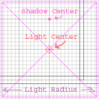
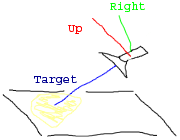
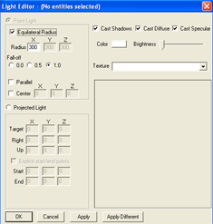

|
|
| Making DOOM 3 Mods : The Light Editor | |
|
|
 |
|
|
|
The light editor can be opened by typing "editLights" in the console or by pressing 'j' in Radiant (because you juice up the lights). You need to have a light selected in the editor for it to really do anything (or you can run around the level in game and select the lights from there). There are two types of lights in Doom 3. Point lights are kind of like a light bulb. There is a center point, and it lights up everything in some radius around that center point. The radius isn't actually spherical. It's actually a box aligned to the world axis. Projected lights are similar to spot lights in that they only shine in a single direction. Point lights

The most confusing thing about the point lights in Doom 3 is the fact that
there are actually 2 'centers' of the light. The first is the actual center
of the light. It defines the point around which the light map is rendered.
This is the purple box in radiant. The second center is the source of the
shadows and highlights. The shadows will be extruded from that point. This
is really useful for creating a fake kind of cone light. You position the
light so it lights up the area you want it to light up, then you move the
center up so it looks like the light is being cast down from above. For the
standard 'light in the ceiling in a hall way' situation, you would position
the area to cover the hallway, then put the center right below the surface
of the light model. To move the center, you can either type the numbers in
the light editor, or drag the little dot around in radiant.
By marking the light as parallel, the light acts as if the center is extruded out to infinity. All the shadows will go in the same direction, and all the highlights in the bumps will face the same direction. This is very handy for creating sunlight. The radius is x, y, z is quite simply the size of the light area in each of the 3 axis. Setting equalateral radius just means it's the same radius in all 3 directions. This is easy to see in the editor. I'm pretty sure fall-off doesn't actually do anything. Projected lights

A projected light goes off in one direction only, away from the light source
(like a flashlight). The matrix that you define controls the direction and
shape of the light. If you have never really messed with matrices much, just
remember you are defining 3 sets of (x,y,z) vectors that set the axis of the
light. So if the 'target' vector is set to -1,0,0 then the light will be facing
the negative x axis in the world. The 'up' and 'right' vectors then defines the
orientation or rotation of the light, which is really useful when you are using a
textured light (such as a stained glass window). In the real world, these 3 vectors
are always orthogonal (or even orthonormal), but in the game world they don't have
to be. The light can easily be skewed to create some interesting effects. However,
two vectors cannot be co-linear (pointing in the same direction), as that would make
no sense.
Other stuff

The right side of the editor is pretty self explanitory. The main thing worth
mentioning is the brightness slider doesn't actually do anything.
The apply different button is for when you have multiple lights selected. Hitting apply different will only change the values on the lights that you changed. This allows you to do things like select a bunch of lights and make them all red without affecting the direction, texture, or other properties on them.
The best way to do it is to just hit F7 to pull up a real time render and play
around with all the various propeties until it looks good. There is really no
other way but through trial and error because it is all very subjective.
|
 |
|
| Copyright © 2004 id software |